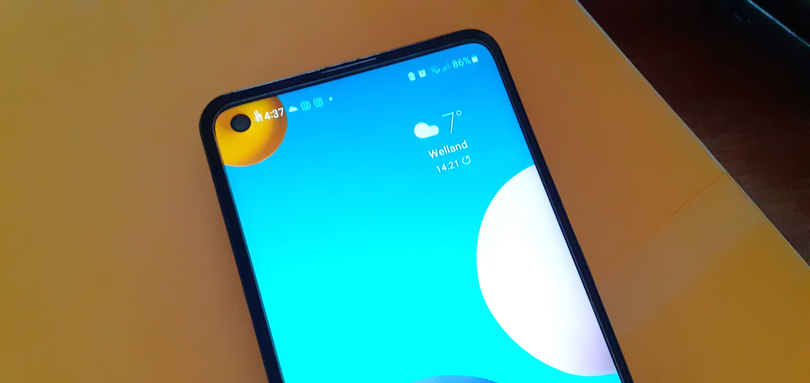

Samsung Galaxy A21s review: Attractive and budget-friendly
Leonardo Mathot
November 28, 2023
The Samsung Galaxy A21s is an affordable, good-looking device that offers some great features. A nice Quad-Camera System, a pretty large screen, and long battery life are some of them.
There are a few things not so good though, but it could be the perfect option for you if high performance is not a must, your budget is limited and you want to enjoy your favorite apps on a big screen for long hours before having to recharge.

The best
- Long Battery Life
- Large Screen
- Quad Camera System
Could be better
- Poor Quality Display
- Not Great Performance
Appealing Design

The Galaxy A21s stands out for its attractive design, which offers an elegant and modern appearance, and a large screen. The A series phones do not look poor quality as Samsung is good at working with materials in the build (TechDaily, 2020).
"One of the Galaxy A21s key features is the 6.5" PLS TFT screen with a small punch-hole cutout around the top left. It has rounded corners as all other recent displays do, and the bezels are trendily thin" (GSMArena, 2020).
Specs
- Body: 163.7 x 75.3 x 8.9 mm, 192g; Plastic body and frame.
- Display: 6.5" PLS TFT, 720 x 1600 px resolution, 20:9 aspect ratio, 270ppi.
- Chipset: Exynos 850 (8nm): Octa-core Cortex-A55@2.0GHz; Mali-G52 MP1.
- Memory: 3/4/6GB RAM; 32/64GB eMMC 5.1 storage; microSDXC (dedicated slot).
- OS/Software: Android 10, One UI 2.1.
- Rear camera: Wide (main): 48 MP, f/2.0, 26mm, 1/2.0", 0.8µm, PDAF; Ultrawide: 8 MP, f/2.2, 123°, 1/4.0", 1.12µm; Macro: 2 MP, f/2.4, fixed focus at 4cm; Depth: 2 MP, f/2.4; LED flash, panorama, Auto HDR.
- Front camera: 13 MP, f/2.2.
- Video capture: Rear camera: 1080p@30fps; Front camera: 1080p@30fps.
- Battery: 5,000mAh; Fast charging 15W.
- Misc: Fingerprint scanner (rear-mounted), accelerometer, gyro, proximity, compass; FM radio, RDS, recording, NFC, 3.5mm jack.
Note. Specs were taken from GSMArena (2020).
Large Screen, Not the Best Resolution
"It's a big phone and for the price that's a big plus for a lot of people. However, there's one glaring issue with the A21s display that has to be considered" (TechDaily, 2020). According to TechDaily (2020), Samsung shouldn't have replaced the superior AMOLED screen of previous models (A20) with the LCD display the A21s has, a mistake that outweighs the benefits of an updated appearance.
But this is not as bad as it sounds. "Fortunately there's nothing wrong with what the a21s offers. This big six-and-a-half-inch screen is great for watching movies and browsing social media. Whatever it is you're doing it's going to be a solid viewing experience on this phone" (TechDaily, 2020).

For me, the large screen the A21s has is ideal for watching Netflix and browsing social media, but I also appreciate the size of the display while using other types of apps such as mobile banking, web searching, and chatting. It provides a comfortable and immersive interface for an enjoyable user experience.
Quad-Camera System
The camera set for the A21s features a 48MP (megapixel) main camera, an 8MP ultra-wide camera, a 2MP macro camera, a 2MP depth camera, and a 13MP selfie camera (Petrova, 2020).
For GSMArena (2020), the 12MP photos (default mode) from the main camera are not accurate but pretty good, the option of a 48MP mode is available. "The ultrawide 8MP photos show good enough detail, spot-on colors, and okay dynamic range" (GSMArena, 2020).

"The 2MP depth camera comes in handy when shooting portraits. The 12MP portraits taken with the primary shooter with the help of the 2MP snapper are great. . . . The Galaxy A21s has a 2MP macro camera with a fixed focus at 4cm distance. If you get the distance right (it's not that easy), then you will get detailed shots of bugs, flowers, or, say, banknotes. The colors stay true to life and the contrast is good, though not great " (GSMArena, 2020).
"I'm happy to say this phone does take some great pictures. ... The 13-megapixel selfie camera is also pretty good too, which is nice to see. All in all, it's a good setup for this phone" (TechDaily, 2020).
Great Battery Life
This Samsung is equipped with a good 5,000mAh battery that supports 15W fast charging via USB-C. With its excellent battery life, the A21s ensures long-lasting, making it reliable for people who utilize their device for work or simply for long hours of entertainment. You do not have to worry too much about the phone getting close to dying, or at least not very often.

"Unfortunately, the 15W charger that comes in the box takes more than 4 and a half hours to charge the A21s's enormous battery from 0% to 100%. However, if you leave your phone to charge overnight, this won't be an issue for you" (Petrova, 2020).
Some Other Features
The A21s offers efficient security with its reliable fingerprint scanner on the back and camera-only face detection, providing users with quick and convenient access to their devices. "The A21s is a consistent performer when it comes to fingerprint recognition and unlocks the phone in a flash" (GSMArena, 2020).
This phone has a 3.5mm headphone jack, which is ideal for those who are not yet ready for the new wireless or USB-C versions.
It has a single speaker at the bottom, so no stereo sound for the Galaxy A21s. "This speaker I'd say is good enough. It's fine for an out loud listening" (TechDaily, 2020).
Ease of Use
"The only downside really is that in the hand it may not be the right fit for everyone. It's comfortable enough for someone like me but there's no understating just how large of a device this is. In fact, just by sheer body size including, not just the screen, but the bezels and housing and everything else, this is one of the biggest samsung phones out right now" (TechDaily, 2020).
Besides the considerable size, which could be an advantage for some and a drawback for others, the Galaxy A21s offers an enjoyable user experience. The interface is intuitive and appealing, and everything works smoothly.

Performance
The Samsung Galaxy A21s runs the Android 10 (operating system) and One UI 2.1 (user interface) package. The processor in this phone is an Exynos 850. The RAM options are 3, 4, and 6 GB, and 32/64 GB of storage. It also offers the option to increase storage capacity with a microSDXC card.
For GSMArena (2020), the Exynos 850 is not as good as it should be. "In terms of performance, the A21s doesn't measure up to the competition, hurt by its disappointing processor" (GSMArena, 2020). They compared the performance of the A21s with that of some other smartphones such as the Huawei P40 Lite, the Xiaomi Redmi Note 9S and the Sony Xperia 10 II, among others.
According to TechDaily (2020) instead, it is not that bad actually: "I've truly pushed this 850 series chipset quite hard and I haven't seen it falter all that much. No, it's not going to be the fastest processor, it's still a budget component after all, but it can do basically whatever it is you want it to do" (TechDaily, 2020).
It may be not the best option for you if you are into mobile gaming or use resource-intensive applications, otherwise, there is no problem at all. Its performance is simply great for me, as I mainly use it to chat, browse social media, watch videos, and run a transit app. Overall, the A21s works perfectly, consistently meets my expectations, and is an ideal device for my daily activities.
Support

On the official Samsung website's support section, you can find lots of information about your device and filter it by category. You have the option to explore frequently asked questions (FAQs) or even watch how-to videos.
I've never had to contact Samsung support for any of the 5 or 6 Samsung phones I've owned because no issues arose (point for the brand) but, if you're wondering, while on the official website, I started a chat, and the bot connected me with a person, which is usually much better, after just a few minutes. So, it's pretty easy and quick, at least to begin with.
Value for Money
The Samsung Galaxy A21s proves to be worth its price. It offers various great features that make it an attractive option for not-high-demanding users who still seek quality and affordability.
"This is a really solid phone, especially for the price" (TechDaily, 2020).
Conclusions

References
GSMArena. (2020, August 3). Samsung Galaxy A21s review. https://www.gsmarena.com/samsung_galaxy_a21s-review-2142.php
TechDaily. (2020, July 24). Samsung Galaxy A21s review after 21 days: Get this one instead! [Video]. YouTube. https://www.youtube.com/watch?v=9sXqz1yODoU
Petrova, I. (2020, October 6). Samsung Galaxy A21s review. Phone Arena. https://www.phonearena.com/reviews/Samsung-Galaxy-A21s-review_id4846